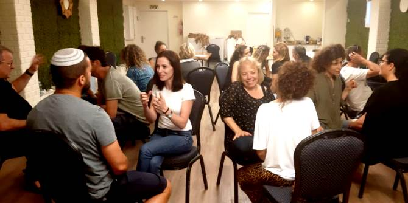

הריטריט חיבר וקשר חוטים של תוכן ותהליך שנטוו מתחילת התוכנית ועד לסיומה. במהלכו עיבדו העמיתים את שהיה, את שישנו, והעמיקו במחשבה על שעתיד לבוא.
הריטריט החל במוזיאון ארץ ישראל בתל אביב. העמיתים סיירו בתערוכה "הלבנט כמשל - ז’קלין כהנוב", בהדרכתה של ד"ר קציעה עלון. לאורך השנתיים העמיתים קראו והעמיקו בטקסטים של כהנוב, והתערוכה הייתה סיכום וסגירת מעגל עם הרעיונות של הגותה על המרחב הארץ-ישראלי כלבנט פורה שמתקיימים בו מפגש ויצירה בין-תרבותיים מפרים וייחודיים.
המשכו של הריטריט התקיים בקיבוץ נחשולים. חלק זה היה סיכום ועיבוד הלמידה במישור האישי, הבינאישי והקבוצתי, תוך חיבור לתפישות המנהיגות שהעמיתים למדו. חלק זה התאפיין בפדגוגיות מגוונות, כגון: תנועה וקול, קליעה וכתיבה, וכן מבט למגילת רות ולחג השבועות.
בסדנה מסכמת שערכה מנהלת מרכז מנדל למנהיגות בנגב, ד"ר עדי ניר שגיא, התמקדו העמיתים בסוגיה של מנהיגות יוצרת מציאות ובחנו בצורה אישית וקבוצתית את מהלך הלמידה שלהם כתשתית לעשייה ולשינוי המרחב בתחומים שבהם בחרו להעמיק: חינוך, תיירות, קהילה ותרבות.
אלה היו ימים מרגשים של רפלקציה ומשוב הדדיים, וזאת לקראת חזרתם של העמיתים למרחב שבו הם פועלים – מצוידים בכל טוב לקראת עשייה משמעותית.

{kind=link}